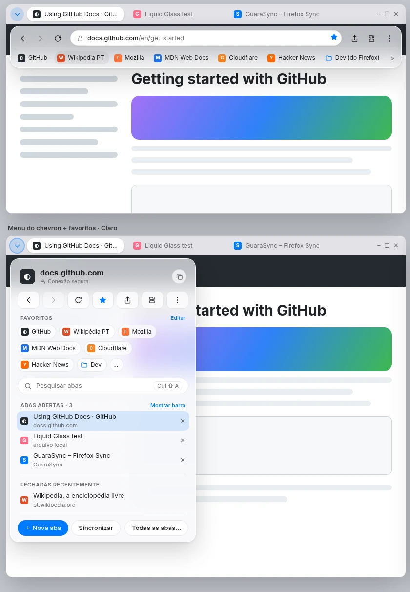
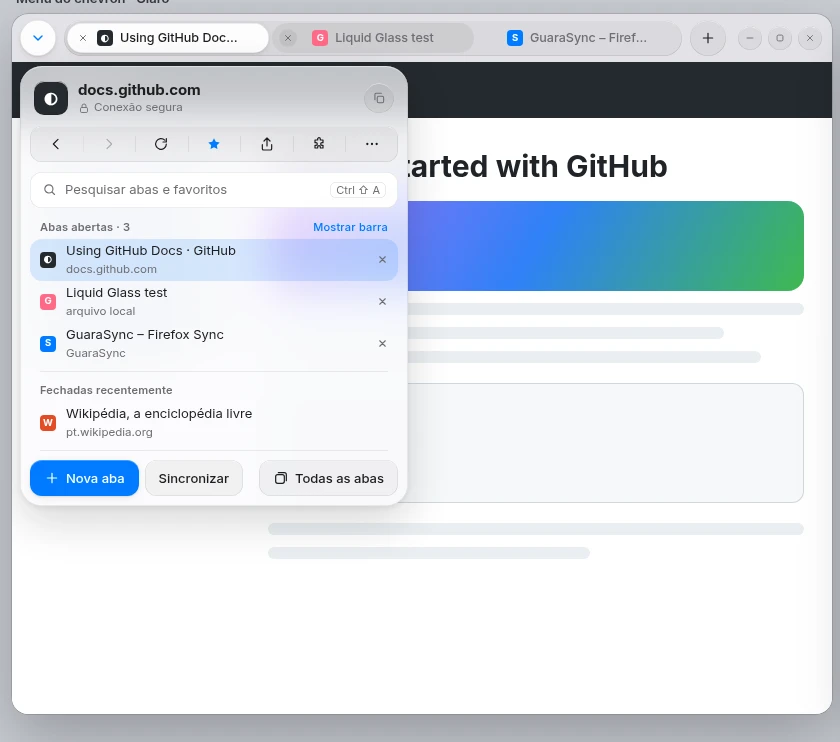
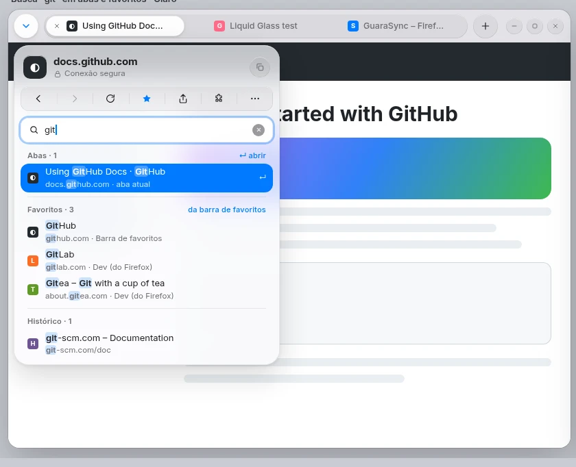
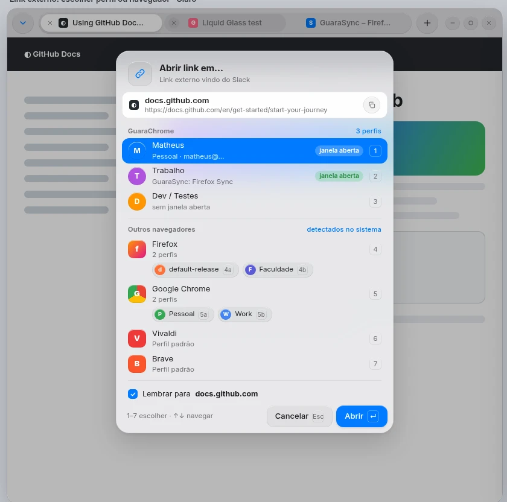
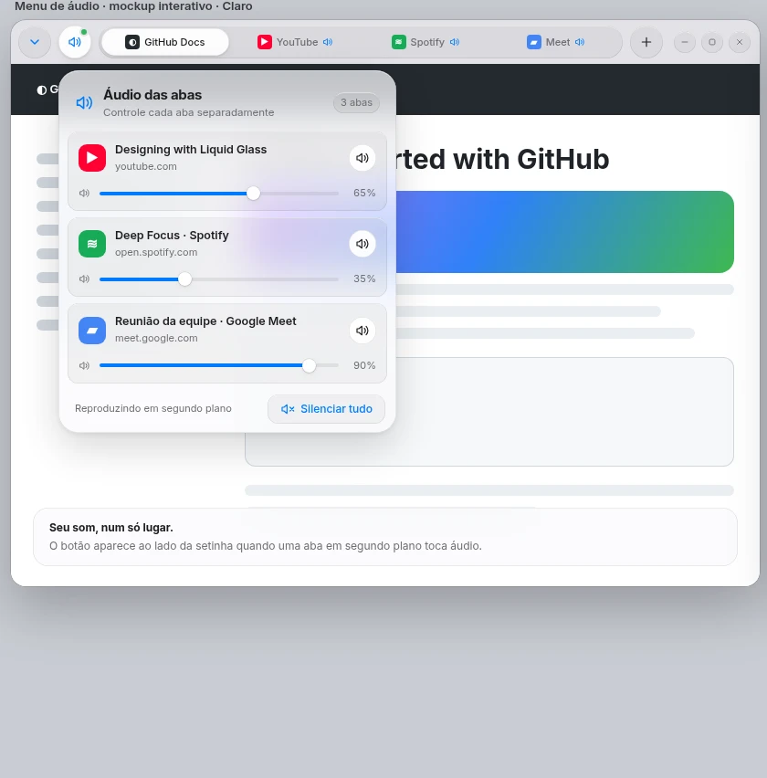

MAIS PÁGINA. MENOS BARRA.
Só aparece
quando precisa.
Toque na aba ativa. A barra flutuante aparece ou some. Seus favoritos vão junto.
Abas no topo. Todo o resto, ao seu alcance.
ABERTO POR NATUREZA.
UI moderna. Features úteis. Experiência fluida.
Prévia de design · Código no GitHub ↗
Downloads demonstrativos. Builds ainda não publicadas.
O ÓBVIO, FINALMENTE.
Fluxos óbvios. Sem te prender ao fluxo de outra empresa.
MAIS PÁGINA. MENOS BARRA.
Toque na aba ativa. A barra flutuante aparece ou some. Seus favoritos vão junto.
Abas no topo. Todo o resto, ao seu alcance.
UM MENU. SEU CONTEXTO INTEIRO.
Domínio, navegação, favoritos e abas. Tudo junto, sem caça ao botão.

VOCÊ LEMBRA. ELE ENCONTRA.
Uma busca para as abas abertas e os favoritos da sua barra.

LINK CERTO. LUGAR CERTO.
Escolha o perfil ao abrir um link externo. Ou mande para outro navegador. Experimental e opcional.

CADA ABA NO SEU TOM.
As abas com áudio num só menu. Volume individual, sem interromper o resto.

GUARASYNC
Favoritos, senhas e histórico com Firefox Sync.
Sem depender de uma conta Google.
UNGOOGLED-CHROMIUM
Uma base aberta, sem os serviços do Google.
Código para ler, mudar e compartilhar.
MODERNO POR FORA. LIVRE POR DENTRO.